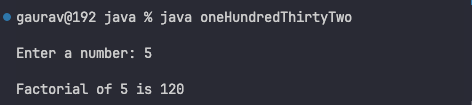

132. Write a Java method to find factorial using recursion in java
Code :
class oneHundredThirtyTwo {
private static java.util.HashMap track = new java.util.HashMap<>();
static long fact(int n){
if(track.containsKey(n)) return track.get(n);
long result = n*fact(n-1);
track.put(n, result);
return result;
}
public static void main(String[] args) throws java.io.IOException {
int num = 0;
track.put(0, (long)1);
track.put(1, (long)1);
java.io.BufferedReader reader = new java.io.BufferedReader(new java.io.InputStreamReader(System.in));
System.out.print("Enter a number: ");
try {
num = java.lang.Integer.parseInt(reader.readLine());
long ans = fact(num);
System.out.println("Factorial of " + num + " is " + ans);
} catch (java.lang.NumberFormatException e) {
System.out.println("Invalid input. Please enter a valid number.");
}
}
}
Output :
